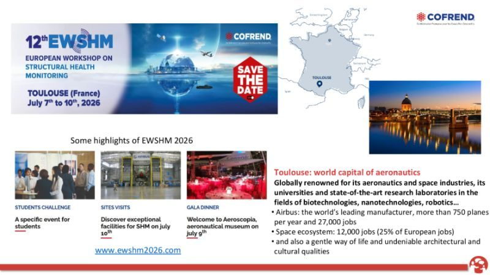

September 2025
EWSHM 2026 special session on vision-based SHM techniques
Together with Michael Döhler, Janko Slavič, Zhen Sun, Vincent Baltazart , BOUALEM MERAINANI, we are organizing a special session at the upcoming European Workshop on Structural Health Monitoring (EWSHM2026), taking place in Toulouse, France, from July 7–10, 2026.
🔍 SS20: Vision-Based Techniques for Vibration Assessment and Structural Health Monitoring
This session focuses on the growing role of computer vision and optical sensing as powerful, non-contact, and cost-effective tools for vibration monitoring and structural health monitoring (SHM). Unlike traditional point sensors, vision-based methods provide global, full-field insights into structural behavior.
We welcome contributions on, but not limited to:
1. Vision-based motion extraction and modal analysis
2. Optical methods for damage detection and diagnostics
3. Motion magnification and computational imaging
4. UAV-based inspection for remote and hard-to-reach assets
5. Robust processing techniques for real-world applications
6. Data fusion with conventional sensors
7. Validation studies and benchmarking against traditional sensing
If your research explores any of these topics, we invite you to submit your work and be part of this exciting session.
Looking forward to your contributions and to seeing you in Toulouse!
